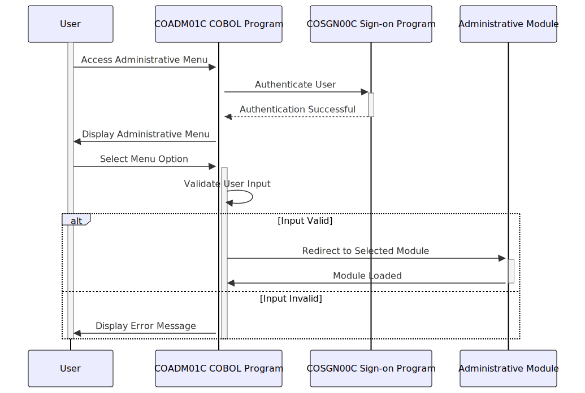

Gerado em: 1º de outubro de 2024
Título do Documento: CardDemo Application - Especificação do Menu Administrativo
Descrição Resumida:
Este documento descreve as especificações para o Menu Administrativo dentro do aplicativo CardDemo. Este menu serve como um hub central para que o pessoal autorizado execute tarefas administrativas. Ele fornece uma interface amigável para gerenciar vários aspectos do sistema de cartão de crédito.
Histórias do Usuário:
Como um administrador autorizado, preciso de acesso a um menu centralizado para gerenciar com eficiência várias tarefas administrativas dentro do aplicativo CardDemo.
Épico Relacionado: 6 - Gerenciamento de Usuários e Segurança
Requisitos Técnicos:
- Exibir Menu Administrativo: Este método exibe as opções do menu administrativo para o usuário.
- Entrada: Nenhuma
- Saída: Exibe um menu de opções administrativas, incluindo:
-
- Gerenciar Usuários
-
- Gerar Relatórios
-
- (Outras opções administrativas relevantes)
- Regras de Negócio:
- As opções de menu exibidas devem ser geradas dinamicamente com base nas permissões do administrador e na configuração do aplicativo.
- O menu deve ter um layout claro e conciso para facilitar a navegação.
- Cada opção de menu deve ter um número ou letra correspondente para seleção.
- Validar Entrada do Usuário: Este método valida a opção de menu selecionada pelo usuário.
- Entrada: Opção selecionada pelo usuário (inteiro ou caractere)
- Saída:
- Verdadeiro: Se a opção selecionada for válida.
- Falso: Se a opção selecionada for inválida.
- Regras de Negócio:
- A entrada deve ser verificada em relação às opções de menu disponíveis.
- Se a entrada for inválida, uma mensagem de erro apropriada deverá ser exibida ao usuário.
- Navegar até o Módulo Selecionado: Este método direciona o usuário para o módulo administrativo selecionado.
- Entrada: Opção validada selecionada pelo usuário
- Saída: Redireciona o usuário para o módulo administrativo correspondente.
- Regras de Negócio:
- Cada opção de menu válida deve ter um módulo administrativo correspondente.
- A navegação deve ser perfeita e eficiente.
- A sessão e o contexto do usuário devem ser mantidos durante a navegação.
Modelos Relacionados
Não aplicável para este componente, pois se concentra na interface do usuário e na navegação.
Configurações:
CDEMO-ADMIN-OPT-COUNT: Número total de opções do menu administrativo.
CDEMO-ADMIN-OPT-PGMNAME: Matriz armazenando os nomes dos programas associados a cada opção do menu.
CDEMO-ADMIN-OPT-NAME: Matriz armazenando os nomes de exibição de cada opção do menu.
Melhorias de Código:
- Implementar um mecanismo de validação de entrada mais robusto que possa lidar com vários tipos de dados e erros potenciais.
- Adicionar registro de erros para quaisquer problemas inesperados encontrados durante o processamento do menu.
- Refatorar a seção
BUILD-MENU-OPTIONS para simplificar a lógica e melhorar a legibilidade. Considere usar uma estrutura de dados para armazenar as opções do menu e seus nomes de programa correspondentes.
- Adicionar comentários para explicar o propósito de cada seção e variável.
Melhorias de Segurança:
- Implementar controle de acesso baseado em função para restringir as opções do menu com base na função e permissões do administrador.
- Validar e higienizar a entrada do usuário para evitar vulnerabilidades de segurança, como ataques de injeção.
- Criptografar dados confidenciais transmitidos entre o cliente e o servidor.
Diagrama Conceitual:

–Made by “Smart Engineering” (by Compass.UOL)–